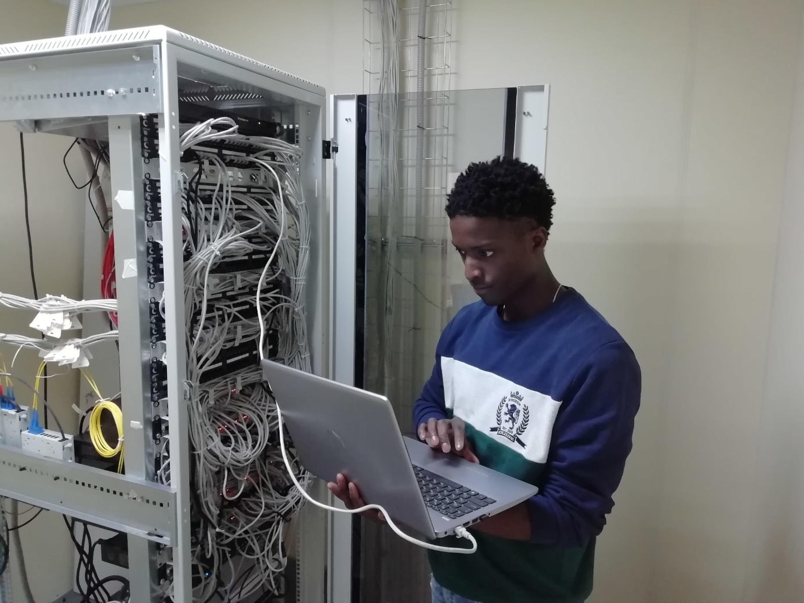

¿Qué hace un ingeniero en sistemas computacionales?
La Ingeniería en Sistemas Computacionales es una rama de la Ingeniería que se encarga del diseño,
desarrollo, operación y mantenimiento de sistemas informáticos. Los ingenieros en sistemas computacionales
utilizan sus conocimientos en matemáticas, ciencias de la computación, ingeniería electrónica y otras
disciplinas para crear sistemas informáticos que satisfagan las necesidades de las organizaciones.
Los ingenieros en sistemas computacionales son profesionales altamente calificados que juegan un papel
importante en la sociedad moderna. Sus habilidades y conocimientos son esenciales para el desarrollo y la
operación de sistemas informáticos que son esenciales para el funcionamiento de las organizaciones y la vida
cotidiana.
¿De qué se encarga un ingeniero en sistemas computacionales?
Las responsabilidades de un ingeniero en sistemas computacionales pueden variar, pero generalmente incluyen:
Análisis de Requisitos: Comprender las necesidades de los usuarios o clientes para
diseñar sistemas que satisfagan sus expectativas.
Diseño de Sistemas: Crear la arquitectura y el diseño de software, determinando cómo
los diferentes componentes del sistema interactúan entre sí.
Desarrollo de Software: Codificar y programar aplicaciones y sistemas, utilizando
varios lenguajes de programación y tecnologías.
Pruebas y Depuración: Realizar pruebas exhaustivas para identificar errores y
asegurarse de que el software funcione correctamente.
Implementación: Poner en marcha los sistemas y aplicaciones, asegurándose de que se
integren adecuadamente con el entorno existente.
Mantenimiento: Realizar actualizaciones, mejoras y correcciones de errores para
garantizar el rendimiento continuo de los sistemas.
Seguridad Informática: Implementar medidas de seguridad para proteger los sistemas y
datos contra amenazas cibernéticas.
Soporte Técnico: Brindar asistencia técnica a usuarios y resolver problemas
relacionados con el software y los sistemas.
¿Cuál es el campo laboral del ingeniero en sistemas computacionales?
El ingeniero en sistemas computacionales puede trabajar en una variedad de industrias y entornos, como:
Desarrollo de Software: Empresas dedicadas a la creación de aplicaciones y programas
informáticos.
Empresas Tecnológicas: Compañías que se especializan en tecnologías de la información y la
comunicación.
Industria: En sectores como manufactura, energía, automotriz, etc., para desarrollar y
mantener sistemas informáticos industriales.
Consultoría: Brindar servicios de consultoría en tecnología de la información.
Sector Financiero: Trabajar en bancos o instituciones financieras para desarrollar sistemas
de gestión y seguridad.
Gobierno: Participar en proyectos gubernamentales relacionados con tecnologías de la
información.
Perfil de un Ingeniero en Sistemas Computacionales.
El perfil de un ingeniero en sistemas computacionales suele incluir habilidades como:
Habilidades Técnicas: Conocimiento profundo de lenguajes de programación, sistemas
operativos, bases de datos y tecnologías relacionadas.
Resolución de Problemas: Capacidad para analizar problemas y encontrar soluciones efectivas
y eficientes.
Creatividad: La capacidad de diseñar soluciones innovadoras para satisfacer las
necesidades específicas del usuario o la empresa.
Trabajo en Equipo: Colaborar con otros profesionales, como diseñadores, analistas y
gerentes de proyectos.
Actualización Continua: Dada la rápida evolución de la tecnología, los ingenieros en
sistemas deben mantenerse actualizados con las últimas tendencias y herramientas.
Comunicación: Poder comunicar de manera efectiva ideas técnicas tanto a colegas como a
clientes no técnicos.
Compromiso con la Seguridad: Dada la creciente amenaza de ciberseguridad, los ingenieros en
sistemas deben ser proactivos en la implementación de medidas de seguridad.